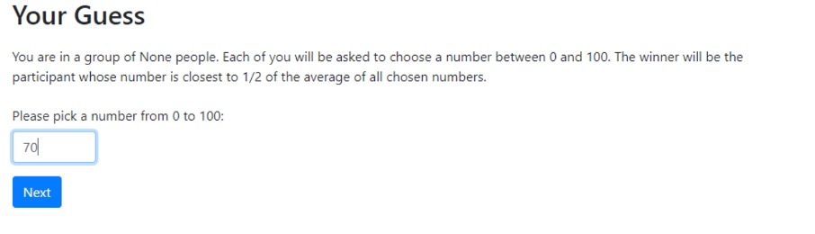

What is it?
- This was a project I was asked to help out on by a friend. Sally was doing a dissertation on “The Effect of a Cognitive Load on Strategic Behaviour and Cognitive Hierarchy: A P-Beauty Contest Analysis”, and while I didn’t fully understand it, I was asked as a programmer she knew to help out writing the automated part of the experiment her dissertation was based on. Using a piece of academic software I’m still fairly unfamiliar with called O Tree, and Python, I was tasked with helping to design and run an experiment which I was informed would measure the degree of strategic behaviour in the p-beauty contest. For the project, I had to help modify a similar existing experiment, and change the formatting and wording the be appropriate in the setting and add a cognitive load element. In the experiment itself, participants were asked to simultaneously pick a number between 0 and 100, with the winner being the person who's number is closest to p times the average of all numbers submitted, with p usually being a fraction such as 2/3 or 1/2
Why I made it in the way I did
- This project was fairly closely monitored on the desired outcome. The required results were highly specific, the wording had to be precise, and it had to function in a very specific way. While not as much freedom on this project as I was used to with others, it was good experience for writing code to meet a client’s specific requests, and an easy introduction to doing it for a friend who I’d known for a while, and had a simple, informal, direct line of communication with, who was very easy to work with. Unfortunately, the project fell through, as covid regulations meant that we were unable to get all of the participants in the building at once, and my network programming is weak at the best of times, and with O Tree, pretty much non-existent, especially with my other assignments in the background. However, it was a fun project to work on, and while I didn’t learn much about economics, O Tree, or any new Python techniques (the actual code itself was fairly trivial, figuring out what to modify was the hard part), it was a good look in at using middleware, and a first time making something to a very specific set of requirements.
